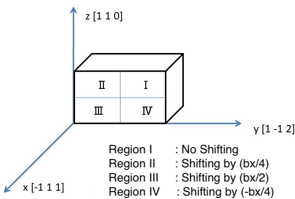
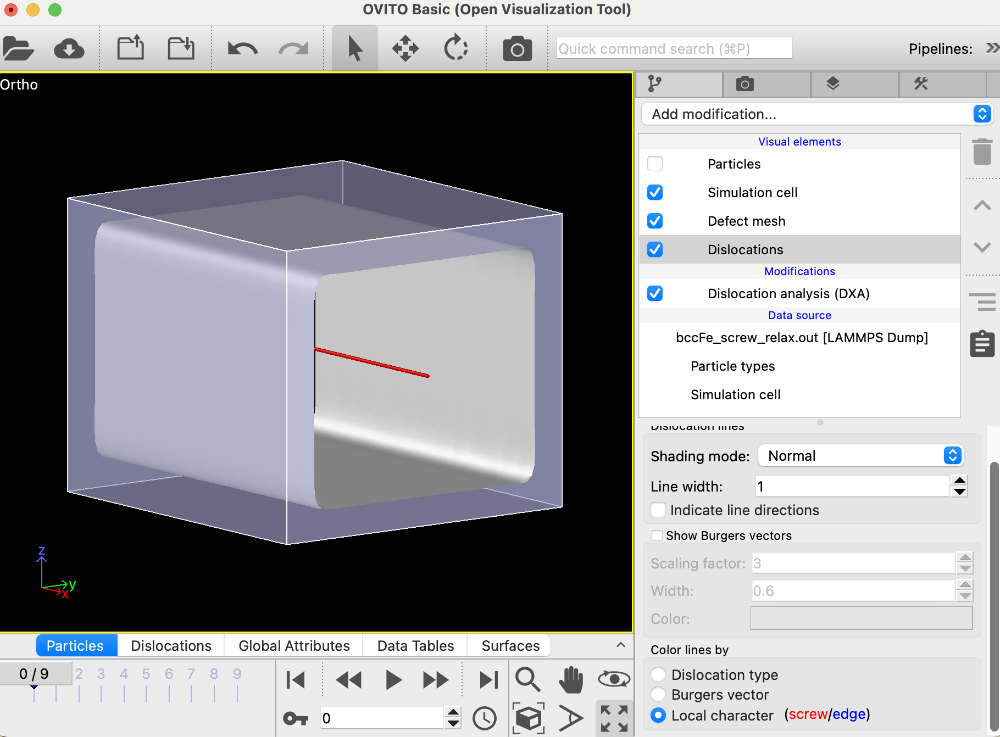

Similar to the edge dislocation learned in the previous lecture on Inserting Edge Dislocation, screw dislocations significantly influence a material's plastic deformation and strength. This lecture introduces a method for inserting a screw dislocation into iron crystal.
To briefly describe what a screw dislocation is as a lattice defect, imagine a sheet of paper in a flat surface like a desk and tear it vertically. Below is a diagram showing a single crystal plane extracted from an iron crystal with a screw dislocation inserted. The left side of the plane is connected, while the right side is separated. In actual materials, due to their thickness, you must think of it as a three-dimensional structure where multiple planes of the same shape are stacked.
Therefore, to create such a lattice defect, it is necessary to cut perfect planes as shown in the figure above.
First, consider an orthogonal crystal system such as the one in Fig.2 below and a rectangular iron crystal placed within it. Divide this rectangular crystal into four regions labeled I through IV, as shown in the figure. Think of the entire crystal region as a wardrobe for storing clothes, and each divided region as a drawer. As we learned previously, iron crystal atoms are arranged periodically along the x-direction, the <111> direction. Let the vector representing one unit cell width, the Burgers vector, be denoted as bx. By moving each "drawer" along the x-direction as described in the figure and relaxing the structure, we can introduce a tear such as the one in Fig.1. Some might wonder, "Can we really create a screw dislocation this way?" Surprisingly, it works.

Fig.2: Schematic Picture for How to Insert a Screw Dislocation
Execution of Script
bccFe_screw_relax.lcm is the input script that implements the procedure for inserting a screw dislocation into iron crystals using the method described above. Execute it using the following command line input.
As with inserting an edge dislocation, you can verify the results by examining the dumped file bccFe_screw_relax.out. Load the file into OVITO. As seen in the figure below, execute DXA from the Add Modification pull-down menu in the right panel of OVITO, uncheck Particles under Visual elements, and click Dislocations. Selecting Local character (screw/edge) further down confirms the dislocation is a screw dislocation, as the obtained dislocation appears as a red line as shown in Fig.3 below.

Fig.3: Operations in OVITO to identify screw dislocations
When a screw dislocation is inserted, the x-plane, i.e., {1 1 1} crystal plane, becomes torn as shown in Fig. 1. The displacement vector of the torn plane, as mentioned above, is b = 1/2<111>. This is the Burgers vector of this screw dislocation. Therefore, the Burgers vector is the same as in the case of the edge dislocation discussed in the previous lecture. As can be seen in the OVITO snapshot diagram in Fig.3, the direction of the dislocation line is parallel to the Burgers vector, i.e., the x (i.e., <111>) direction (see the coordinate arrows at the left-bottom corner of the OVITO diagram). This differs from the case of edge dislocations, where the Burgers vector and the direction of the dislocation line are perpendicular to each other.
To perform the "drawer" movement described in Fig.2, the boundaries in the y and z directions must be free, so a vacuum must be introduced at those boundaries. I hope this technique is already familier with you. The script above defines variables used to introduce the vacuum. How they are used will be clear later in the script.
Creating Base Crystal
units metal
boundary p p p
atom_style atomic
lattice bcc ${lc} orient x 1 1 1 orient y 1 1 -2 orient z -1 1 0
region box block 0 ${x_box} 0 ${y_box} 0 ${z_box}
create_box 1 box
create_atoms 1 box
The above script block is almost identical to Inserting Edge Dislocation. No further explanation is given here.
Creating Vacuum Layers
region lower_vacuum_z block INF INF INF INF INF ${vacuum_low}
delete_atoms region lower_vacuum_z
region upper_vacuum_z block INF INF INF INF ${vacuum_high_z} INF
delete_atoms region upper_vacuum_z
As mentioned above, this block describes the creation of vacuum regions near the z-direction boundaries.
region lower_vacuum_y block INF INF INF ${vacuum_low} INF INF
delete_atoms region lower_vacuum_y
region upper_vacuum_y block INF INF ${vacuum_high_y} INF INF INF
delete_atoms region upper_vacuum_y
This block performs the same boundary processing in the y direction as done in the z direction.
Here, define the four regions explained in Fig.2. Slight tune by "0.167" is to avoid unstable results by hitting the boundaries onto atoms.
group block_one region block_one
group block_two region block_two
group block_three region block_three
group block_four region block_four
Then, define the groups of atoms in each partitioned region (i.e. "drawer") as groups.
Shifting "Drawers"
displace_atoms block_one move 0.000 0 0 units lattice
displace_atoms block_two move 0.125 0 0 units lattice
displace_atoms block_three move 0.25 0 0 units lattice
displace_atoms block_four move -0.125 0 0 units lattice
displace_atoms command moves atoms within the specified group. Here, it moves atoms within each "drawer" by the distances shown in Fig.2. Actually, the first line of this script block is unnecessary since the atom displacement distance is 0.0 Angstrom, but it was described for enhancing clarity and readability.
Structural Relaxation
pair_style eam/fs
pair_coeff * * ./potentials/Fe_mm.eam.fs Fe
neigh_modify every 1 delay 0 check yes
fix 1 all box/relax iso 0.0 vmax 0.001
thermo 1000
thermo_style custom step pe lx ly lz pxx pyy pzz
dump 1 all custom 100 bccFe_screw_relax.out mass type xs ys zs
min_style cg
minimize 1e-25 1e-12 50000 10000
In this final block, the whole simulation box is structurally relaxed, and the screw dislocation should appear.